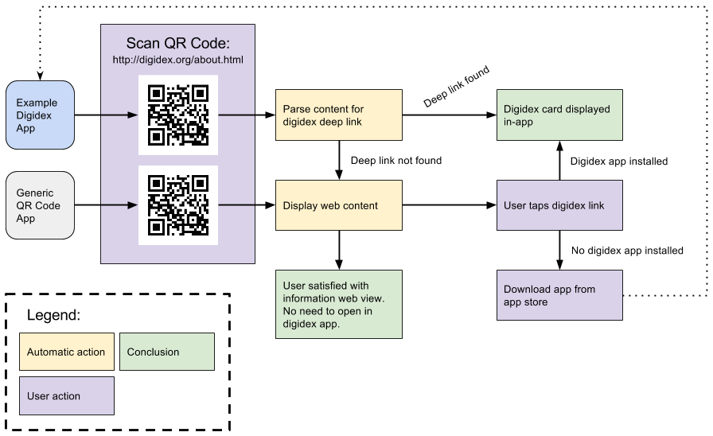

Linking Digidex Cards
Digidex degrades gracefully. That means when you send a someone a link to a digidex card, they can view it even if they don't have a digidex app. However, if they do have a digidex app, they should be able to open the card in that app in as few steps as possible.
Digidex URL scheme
Digidex uses a custom URL scheme to identify links directly.
digidex:http://digidex.org/digidex.jsonImmediately following the digidex URL scheme, you should include your entire web URL (including the http or https) that links directly to the digidex json data.
Using this URL scheme will allow users to open a web-hosted digidex card directly in their client of choice.
Deep Linking Digidex Cards
Deep linking your digidex card in a web page provides several benefits. It allows a browser (or browser extension) to discover more information about your page. The digidex card could be used to create rich bookmark data, or could be pulled into an app and saved by the user. When a QR code is scanned by a digidex app, it will detect the deep link, and load the digidex card directly rather than present the web page.
To deep link your digidex card in a webpage, simply add a meta tag to the head of your HTML.
<meta name="digidex" content="digidex://digidex.org/digidex.json">If you make an app that allows users to create and publish their own digidex cards, be sure to include a feature that generates a webpage with the card's content. The web page that you create should include a deep link to the digidex card's card data.
{kind=link}